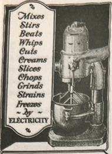
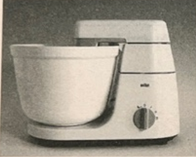
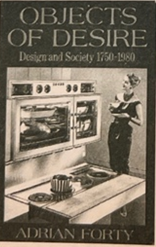
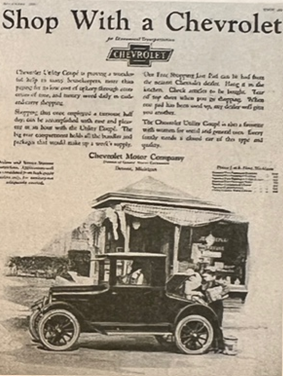
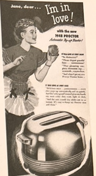
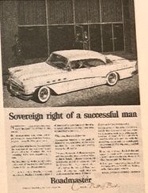
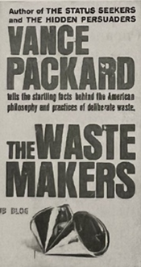

Although many elements had already fallen into place in previous decades, consumer society came into full swing in the 1950s, first in North America and later also in Western Europe and other countries around the world. Industrial design became its celebrated partner. The most famous European designers of the first half of the twentieth century had often incorporated socialist principles in their work, with the utopian tent to change the lives of the population for the better through design. After the Second World War, a new age of consumerism, advertising, and styling took over, as the market increasingly dictated design decisions. Design became primarily a means to sell a product, rather than improve it. With a growing middle class and a booming economy, North America became the center of commercial design and offered designers the opportunity to become stars. While much of the world was trying to rebuild both its economy and its morale, North American consumer culture and its products were exported to Western Europe as a result of the Marshall Plan, and with similar post-war American subsidy programs worldwide. The financial aid that the European, Asian, and Middle Eastern countries received, was often spent directly on US products, boosting the United States economy and spreading its material and ideological influence around the world.
There is no clear break between the more socially committed designers of the first half of the twentieth century and the more commercially inspired design of the second half of the inter- and post-war years provides many examples that illustrate the increasing influence of the consumer capitalist system on design and thus the involvement of industrial design in supporting an unsustainable production and consumption culture. Many of the characteristics of today's consumer society were solidified during this time, while much of the criticism it currently receives already started to be voiced as well. Much social and sustainable design, both today and in the past, appears to challenge characteristics of consumer society as we know it, such as the ubiquity of disposable objects, the careless us of precious materials, or the harsh labor conditions under which many of our commodities are produced. These unsustainable practices have become part of daily reality to such an extent that we take them for granted as if they have always been part of our design and consumption system, which makes it difficult to recognize and challenge them. It is therefore useful to deconstruct some of the characteristics of consumer society, such as obsolescence and styling, in which design plays a major part. A historical perspective reveals that these practices have not always been as self-evident as they now appear to be, and have been heavily criticized in the past as well.
Planned Obsolescence
At a fire station in Livermore, California, hangs the world's oldest lightbulb. It has been burning faithfully and almost without interruption since 1901. Nicknamed the Centennial Light, it is cared for by the Centennial Light Bulb Committee, which celebrated its hundredth birthday in 2001. It has its own website where you can see it in action twenty-four hours a day via its own webcam. The reason that people find this old light bulb so amazing is that we are not used to products lasting that long. Most people in industrialized countries live in a culture of disposables, ranging from paper cups. that last one coffee break, clothes that last a season, to laptops that last a few years before they become too slow and we replace them. While we can usually design and save up for better products, that could serve us as grandchildren, both designers and consumers regularly choose not to do so, for many different reasons. The Centennial Light is often mentioned in discussions around 'planned obsolescence', as its remarkable lifespan seems to disagree with our current conception of the longevity of light bulbs. 2 Planned obsolescence is the concept of designing and producing commodities to give them an artificially limited lifespan. This can be achieved, for example, by working with low-quality materials or by using inferior production methods. It is a complex concept that is deeply ingrained within capitalist society and within design. This particular light bulb was produced by the Shelby Electric Company in Ohio at the end of the nineteenth century there are quite a few of those very old still working bulbs around, while modern light bulbs are known to expire within a few years of use. The technological prowess in light bulb production almost seems to have taken some steps backward a century later 1924, a group of light bulb manufacturers consisting of Osram, Philips, and General Electric, among others, formed a cartel to take control of their trade. They came up with a new plan to respond to declining sales. The companies agreed that from then on they would only produce light bulbs that were designed to last a maximum of 1000 hours, even though they were capable of producing more durable onesThis meant that the manufacturers could use cheaper materials and produce more bulbs at lower costs, and also that their customers would have to keep purchasing new bulbs as they burned out over the years. The customer had no choice but to buy the lesser product since the manufacturers had banded together and therefore there was no competition there may have also been a technical imperative to the agreement, as longer-lasting incandescent light bulbs are found to be less energy-efficient, the cartel established a successful way of selling more products. It has been copied. endlessly thereafter. Planned obsolescence might now be seen by environmentalists as a disastrous invention, but in the depression era when it was conceived, it was considered a necessary and successful interference with declining sales. As such, planned obsolescence was believed to help restore the economy, keep factories running, and thus provide much-needed jobs.3 After the depression, it was kept in place in many parts of the industry as a way to guarantee continuous sales. Besides purposely designing and producing goods with low-quality standards, planned obsolescence has also been achieved by deliberately dispensing with the option to adapt, repair, and update products. This has become a dominant convention in consumer electronics. When our electronic devices break down or become slow we tend to replace the whole device, rather than just the worn or broken element, as this is often cheaper than having it repaired. Most of us do not have the knowledge to perform repairs ourselves. Addition- ally, it is sometimes impossible to obtain replacement parts, and many devices cannot even be opened up. The conventional design of electronic devices has become the surface design, which is characterized by impermeable polished exteriors behind which the mechanisms and electronics are stored. Yet this was not always the case. In Objects of Desire: Design and Society 1750- 1980, design historian Adrian Forty describes how domestic appliances, such as kitchen mixers or radios, transformed from being very functionalistic and in-industrial-looking with visible mechanisms and wires, to being wrapped in smooth, white plastic coverings in 1950.As the first electric equipment that appeared in the early twentieth century was expensive and meant to be operated by servants, the industrial look was no problemThe new domestic machines were basically smaller scale copies of industrial ones. After the warhowever, appliances were increasingly mass-produced, became cheaper, and were consequently marketed towards middle and lower class households as well. There, the housewife was expected to take care of domestic work, which was implied to be an elevated situation compared to working outside the home in a factory, for example. Forty argues that the consumer did not want to be reminded of industrial labour when operating a vacuum cleaner or a washing machine, and this was the prime reason that the design of many household products underwent a significant trans- formation. Appliance design became dominated by a sealed-off surface aesthetic, where the polishedoften white exterior of the product concealed the function- al elements inside. The machine became boxed up in a shell with only a few buttons or knobs to operate itso that it looked simpler and less intimidating to the consumer. The German company Braun, and its well- known designers Hans Gugelot and Dieter Rams, were very influential in pioneering this convention, and other companies soon followed in their footsteps.6 These surface aesthetics continue to dominate consumer electronics to this day, and they reinforce the assumption that the object should not and cannot be opened up. Users are not supposed to interfere with the mechanics of the machine, as they are not expected to understand its workings. In more recent times, technol- ogy company Apple, whose head designer Jonathan Ive is a known Rams fan, is one of the many companies that have been accused of employing this type of policy in order to limit the lifespan of its productsWell-known examples are the iPod, whose battery inevitably loses capacity over time, but is irreplaceable, and the Retina MacBook Pro, which has been named the 'least-repair- able' notebook ever. It is glued together to save weight, making it impossible to open up to replace parts or car- ry out repairs. Some devices are even programmed to stop functioning after a certain time. Hewlett Packard for example has been sued by its customers for using programmed obsolescence. The company was ac- cused of programming the chips in its ink cartridges to communicate to the printer that they needed to be replaced when they were in fact still half full.
Styling and Restyling
Another type of planned obsolescence, and one that seems almost too obvious to be named as such, is styling. An early example of it being purposely used to promote obsolescence can be found in the history of the car industry. Around the same time that the light bulb cartel was formed, the car industry in the United States faced a saturation of the market. Everyone who could afford one had a car now, so the major growth of the previous decades was over. Some car manufactur ers decided to try a new sales tactic. It was a different one than the deal of the light bulb companies, but it had a similar effect. After having produced one mode car successfully for many years, they introduced new styles. Styling became a way to market a new car whi essentially only had a new exterior, covering the exac same technology underneath. This way, new models could be introduced over and over again, in an attem to convince the consumer that they always needed to replace their car for a more fashionable one.10 Needless to say, it was a huge success."
Today, styling is so much part of our culture and of the job of many a designer that we perceive it as a given. It is something that implies progress, novelty, and sophistication, highly valued qualities in our society. The most obvious and successful example of styling happens in the way we dress ourselves, as the word fashion, a synonym of style, has even come to denomi- nate the clothing industry as a whole. Most of the time, we buy new clothes not because all of our old ones have worn out, but because we do not want to appear out of style. High fashion labels have been turning out new collections faster and faster over the past dec- ades, going from two, to four, to six collections a year. Fast fashion giants like Zara, H&M, and Primark intro- duce sub-collections throughout the seasons, so that their customers see something new in the stores every few weeks. These clothing chains are known for not really designing clothes themselves, but rather taking their cues from the catwalks. They have become ex- perts at copying catwalk trends and transforming them into mass-produced items that hit the stores within a matter of weeks. Due to their low material quality, fast fashion clothes do need to be replaced often because they wear out, as they are only intended to function for one season.
Irresponsible Objects
Mid twentieth century, a specific form of styling be- came the symbol of criticism of this customIt was the iconic streamlining trend, which started in the 1930s and continued well into the 1950s. Aesthetically re- lated to Art Deco, architects and industrial designers applied seamless, aerodynamic forms to not only cars and trains, where they may have had more than just
An aesthetic function, but also to building and to objects and appliances such as radios, refrigerators and an a vacuum cleaners. The designs were often executed in new materials such as aluminum and bakelite, whose smooth shapes with their rounded edges and charac- teristic horizontal lines fostered a sense of speed, of the future, and of scientific progress. Streamlining became very popular in the United States, and turned some of its associated designers, like Norman Bel Geddes and especially Raymond Loewy, into stars.
Streamlining is most iconically represented by the large American cars that embodied the style in the nineteen-fifties. These cars in particular became the objects of criticism by writers and designers like Vance Packard, Ralph Nader, and Victor Papanek. While American cars became larger and more extravagant with every newly introduced model, the mechanics of the cars were not improved upon. As Victor Papanek stated with obvious disgust in his 1970 best-seller De- sign for the Real World: ...with the primary use function of the automobile solved', the car became 'a combi- nation status symbol and disposable, chrome-plated codpiece'¹4 In 1965, political activist Ralph Nader had published his influential book Unsafe at Any Speed, in which he attacked the car industry for the intended and unintended effects of planned obsolescence. He argued that designers and manufacturers only con- cerned themselves with endlessly renewing the style of the exterior of the car, but that there were hardly ar mechanical improvements. He heavily criticized the lack of adequate safety regulations in the car indus- try, evidenced by an increasing number of fatal traffic accidents.15 Eventually, Nader's and others' criticisms led to the introduction of mandatory safety checks a features such as safety belts in cars.
Another influential review of American consume
the culture was delivered by the journalist Vance Packard, who throughout his career published widely on various sociological subjects. His 1957 book The Hidden Persuaders dealt with the advertising industry and argued that advertisers and marketing researchers use morally questionable psychological techniques to manipulate the public into thinking it needed to buy products or vote for certain politicians. He argued that advertisers focus on psychological needs, such as emotional security, power, or immortality, and play on the doubts and anxieties due to the lack thereof. Through advertising, consumers are led to believe they can satisfy these needs by purchasing the product. Packard's research continued to foster a distrust in the advertising and marketing world. His next book, The Status Seekers, from 1959, analyzed socio-economic inequality in the United States. It argued that the capitalist ideal of democratizing prosperity did not equally benefit everyone and that social classes were kept in place by elites to consolidate their own wealth.
Packard continued his campaign against the wanted effects of consumer society with The Waste Makers, in 1960. This book was an attack on planned obsolescence, waste, and material inefficiency, which he maintained had become the bedrock of US design and manufacturing of consumer goods. In the chapter 'Planned Obsolescence of Desirability', he argued that planned quality obsolescence, in which products are made to 'wear out or to look shoddy after a few years' PACKARD did not go fast enough for marketers and producers.18
The safer, more widely applicable approach, many soon concluded, was to wear the product out in the owner's mind. Strip it of its desirability even though it continues to function dutifully.
This approach was, of course, styling Through interviews with product designers and marketing re- searchers, Packard traced the focus on obsolescence through styling to the precedent of women's fashion which other industries tried to follow: "In the fifties, designers in a great many fields earnestly studied the obsolescence-creating techniques pioneered in the field of clothing and accessories, particularly those for women. Through the lowering of prices because of 20 increased mass-production, the fashionable dress came within reach of the middle and working classes, and the clothing industry had by then already proven to be enormously successful in convincing them of the need to buy new garments solely because of a newly arrived styles precedent was adopted by other fields and industries such as consumer electronics, kitchenware, and furniture, which in turn accelerated their style updates by way of yearly varying color palettes, ornamentation, and successively changing silhouettes.
The Waste Makers, like Packard's earlier publications, was furiously oriticized, as exemplified by a view by A. Edward Miller in the Journal of Marketing in 1961:
These books are all on the wasteful side; the Xe author had an opportunity to perform a useful and constructive service by reporting in proper perspective the complex and admirable way in which the great American distribution system functions. That approach probably would not sell nearly as many copies as the tack which Packard has taken, the shining of a glaring spotlight on the distribution system so that every imperfection real and some con- thrived- is highlighted.
He continued: 'Even the most diabolical marketing man cannot exist on deception, shoddy products, and the kind of waste and inefficiency which Vance Packard claims is the norm. Miller's reaction echoed a feeling that was and is held by many, as it is broadly accepted that consumer capitalism has brought unprecedented levels of prosperity and that its flaws of waste and inefficiency are small compared to its gains. While Packard's research certainly has been widely discussed, it cannot be said that its insights really changed our way of designing and consuming. Yet in the light of today's environmental and economic crises, which arguably are the result of a globally extrapolated version of the consumer culture of the fifties, Packard's analyses do take on a new level of urgency. They show us that many of the design conventions that we take for granted today have been ingeniously and artificially constructed- ed in another age, and are therefore not impervious to change. The introduction and acceleration of re-styling and other forms of planned obsolescence are norms that can be challenged, and designers ought to be aware of their responsibility in either reaffirming or subverting these conditions in their work. A well-known example of an initiative that attempts to offer an alternative to designing and producing obsolescence is cra- dle-to-cradle. This concept, popularized by the book of the same title by chemist Michael Braungart and architect William McDonough, promotes design and production that mimics biological processes such as the complete recycling and regeneration of materials to arrive at an industry without waste.23
The criticisms by Packard, Nader, Papanek, and their followers demonstrated a growing discontent with the perceived effects of consumer culture though the long-term consequences of disproportionate CO₂ emissions and other invasive forms of environmental pollution were still largely unknown at the time, their arguments were already centered on challenging some of its causes: a designed overproduction and overconsumption resulting in inefficient and unnecessary waste of materials and energy within consumer society. They saw design as complicit in supporting and reaffirming these systematic conventions, and consequently as a terrain of possible dissent.
See for example the documentary The light bulb Conspiracy, directed by cosima Dannoritzer, 2010
For more on planned obsolescence in the depression era, see the 1932 paper by Bernard London, 'Ending the Depression Through Planned Obsolescence'.
See for example the documentary The light bulb Conspiracy, directed by cosima Dannoritzer, 2010
For more on planned obsolescence in the depression era, see the 1932 paper by Bernard London, 'Ending the Depression Through Planned Obsolescence'.

Advertisement for Kitchen Aid mixer, 1920s.

Gerd Alfred Muller, Braun KM3 kitchen mixer,1957.

Adrian Forty, Objects of Desire (New York:Pantheon Books, 1986), pp.215-20.
7Hank Stuever,'Battery And Assault', The Wathington Post, 20 December 2003
8 Kyle Wiens, 'The New MackBook Pro: Unfixable Unhackable Untenable wired 14 June 2012'
9 Daniel DiClerico, 'HP Inkjet Printer LAwsuit REaches $5 Miilion Settelemnt', Consumer report, 17 Novemeber 2010

Advertisement for a Chevrolet Utility coupe, 1923.
For more on obsolescence and styling see: Giles Slade, Made to Break:Technology and Obsolescence in America

Proctor toaster advertisement, 1948.

Advertisement for Buick Roadmaster,1856.
14Victoria Papanek, Design for the Real World: Human ecology and social change, p14
Ralph Nader, Unsafe at any speed: The Designed in Dangers of the American Automobile (New York: Grossman, 1965)
16Vance Packard, The Hidden Persuaders (New York: D.McKay, 1957).
17 Vance Packard, The status Seekers: Am Exploration of Class Behavior in
America and the Hidden Barriers That Affect You, Your community, Your Future(New York:D.McKay,1959).

Vance Packard, The Waster Makers (London:Longmans, 1960), p.68.
Marjanne Van Helvert, and Andrea Bandoni. The Responsible Object : A History of Design Ideology for the Future. Amsterdam, Valiz ; Melbourne, 2016.